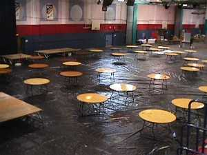
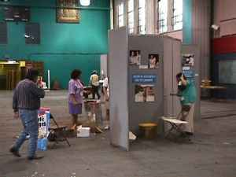
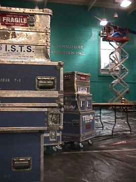
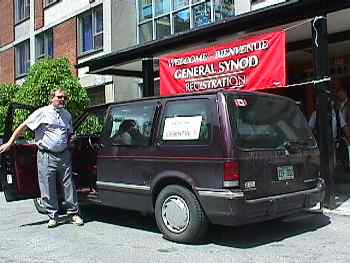
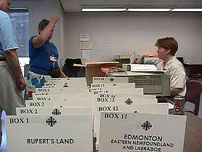

| Front Page Your
Say!
Speak your mind with
others and direct to the Plenary floor
Resolutions
Complete text of all
resolutions and their status
Members
Full list of all members
and back issues of General Synod Times.
Reports
All reports from national
church committees and Councils |
|
Day 1:
May 21 1998

Still setting up the floor of Plenary at 9am, May 21. The tables at the back of the
room on the left will be the podium where the Primate will preside over the session.
TV producer Lisa Barry (in jeans) and General Synod Coordinator Jamie Tomlinson (back
facing camera) consult in front of TV production unit. Photo taken 9:30am May 21.

At the back of the Plenary floor are displays from church committees and related groups.
They are spending the day setting up their displays.

Television production crew setting up studio lights on the floor in preparation for the
dry run later tonight.

One of the shuttle van arriving at the Registration centre with members coming from the
airport. Several shuttle vans are in operation throughout the Synod.

Want a tough job? Try setting up the required paperwork for each diocese at Plenary
over several days of proceedings! These staff members, located in the General Synod
Office, prepare the first package. |